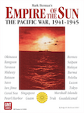

Empire of the Sun: Read Me!
Offensive Unit Activation & Movement
Select a highlighted card and choose a play option button in the upper right taskbar. To start building an Offensive, choose an HQ and activate & move units from there.
When activating units, you click to add them or click them again to remove them. Clicking the undo button will step you back to the Choose HQ step.
With unit movement, it is not required to count hexes or legs (in the case of air units) to move a unit on the board. The module will highlight all the eligible destinations available for the unit selected to move to. All that is required is to choose a destination and the unit will move there. For more advanced movement capability, click the Advanced Move button to open up options for avoiding enemy ZOI or strategic movement.
To move a stack of the same type of unit, simply click on multiple units in the hex before choosing a destination hex.
Important note: By default, the module assumes that the unit will use the regular movement type that allows for battle. For ground units that move by Amphibious Assault, it will automatically increase the Amphib Shipping Used marker when clicking on an overseas destination that isn't a friendly port. For air units with parenthetical ranges, it will not move by extended range unless Extended is clicked in the Advanced Move sub-menu to open up those destinations to be selected.
Undo. At any time during Offensive planning, every step can be Undo-ed all the way back to the card play itself until the Next button is clicked when "Confirm offensive" is in the taskbar. When that happens, everything is committed and play is passed to the Reaction player. Undo even works with reaction disengagement (more on that below).
Offensive Sequence. All the steps of the offensive sequence in 7.2 are strictly followed by the module, but the module will declare/assign battle hexes as units are being moved as an aid to planning. Just understand that battle hexes are not technically declared until after all units have completed moving and this is important for the disengagement rules (more on that below)
Reaction Activation & Movement
This will work the same as Offensive movement, but the module will not assume that a unit activated by the player can actually react to a battle hex. During unit movement, however, it will only allow legal destinations to participate in battle hexes. If you run into a situation where a unit you activated can't be moved, just Undo back and correct the activation.
Reaction card play. The module will only allow reaction cards to be played during the offensive sequence step that they would be played in. Therefore the module will prompt multiple times at various points to ask if you would like to play reaction cards. Many times, this step can be skipped, but be sure to pay attention if any cards are highlighted in yellow in the Hand section. If you skip and play passes back to the Offensive player, that step can't be Undo-ed.
Reaction Disengagement
The ground disengagement rules in 8.43 can be triggered during an offensive if a ground unit of a lower CF value that ground moves into an enemy unit with a higher CF value. This can also happen if two or more ground units are moving as a stack. When this happens, the module will show "Reaction player could use disengagement ability after this move." in the taskbar and two buttons: Prompt and Continue.
Prompt: When clicked, this will immediately switch control to the Reaction player where they can choose to either disengage or remain in the hex.
Continue: When clicked, this will not switch control to the Reaction player and allow the Offensive player to continue moving units. At the end of all movement the module will switch control to the Reaction player to decide whether to disengage or not at that original point. The module will remember in which order the ground units moved into which hexes to preserve the disengagement choice for the reaction player.
In either case, the module will revert back to the Offensive player to continue moving or to commit the offensive.
Important note: This whole sequence can be fully undo-ed at any time by the Offensive player, including re-prompting the Reaction player to disengage if the ground unit move is re-done. Undo functionality is preserved until the offensive is committed.
Custom Markers
- Grey ASP marker: This is found on the general records track and designates how many ASP points Japan has available when under ISR restrictions.
- Progress of the War: A blue marker with a white star will appear on Allied captured hexes for Progress of the War tracking. This marker will also appear on the General Records track to keep count.
- Battle/SR Hex marker: Lettered green highlighted marker that can be on a hex or in the upper right of a unit. It designates the battle hex itself or which battle hex the unit is assigned to. For a potential battle hex that is waiting for Special Reaction resolution, it will initially present with a yellow highlighted background.
- Movement type marker: Naval movement marker that is found on the upper right of ground units or naval units. Blue = Amphibious Assault movement; Red = JP Organic Transport; Black = Strategic movement; Yellow = JP Barge movement
- Out of Supply marker: Will be found in the upper right of a unit that is out of supply. Also, a regular OOS marker will appear on the hex to designate that there are one or more units in that hex that are OOS. It is possible that there will be units of different supply statuses in the same hex, so be sure to click the hex to expand the units and figure out which units are actually OOS.
- Intrinsic Defense: One or more JP ground units (either 9-12 or 12-12) with no unit ID will appear during a battle resolution that includes intrinsic defense. If a JP home islands hex is captured, the 12-12 unit will remain with a Red X through it to designate that it has been eliminated and won't return if re-captured.
Tips & Tricks
- Clicking on a Battle Hex marker will bring up the Battle Info dialog. This will show all the CF values and modifiers of the attacker and defender for that battle.
- A long press on a unit or mouse hovering while holding Ctrl over a unit will show both sides of that unit. Also, an HQ will display a highlighted hex grid of that HQ's range. To remove it, click the large HQ icon in the upper right.
- Returnable eliminated units can be found in the lower left of the map under the Turn track. They will become selectable during the Replacements phase.
- Supply Checker: Click the gas can icon on the taskbar and then click on a unit to display its supply path or how it is blocked. Click Done button to exit out of the checker.
- Distance Checker: Click the gas can icon on the taskbar and then click on the hexes to check the distance. A second click on the first marker will remove them. Click Done button to exit out of the checker.
Card Notes
Tokyo Express: Any JP controlled hex can include unnamed empty hexes with this card. The module will show which hexes are allowed for the Tokyo Express marker placement.
Orde Wingate: Selected unit will return to its initial hex and a Battle Hex marker may be removed if no other Offensive units are committed to that battle.
Other notes
- VP Scoring: All the yearly scenarios and the South Pacific Scenario use the VP scoring schedules for Tournament play. Use the Inspect Victory Points dialog in the Sign icon menu to check the current score.
- Supply: Unit supply is checked continuously throughout the offensive sequence and especially during unit movement. If unexpected supply changes happen during movement, be sure to Undo back to adjust the move.
- Control Markers: Control marker presentation is supported in two modes. Vassal-like, where the markers are more prevalent, but opaque; and Default, where the markers look like a normal marker, but only Allied markers will be shown for occupied countries. Non-occupied countries will show according to the imperial border. At any time, Nation status can be checked in the Poltical Status view in the Sign menu.
- Some markers for the General Records Track (i.e. Cards Drawn markers, PotW, etc) won't appear until they are actually needed to track something. They will also disappear when they get to zero.
- The hexside between 2216 and 2217 in Western Borneo is land only. We received an older map graphic from GMT and haven't yet gotten an updated one.
